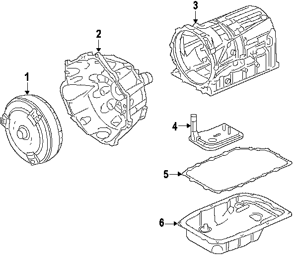
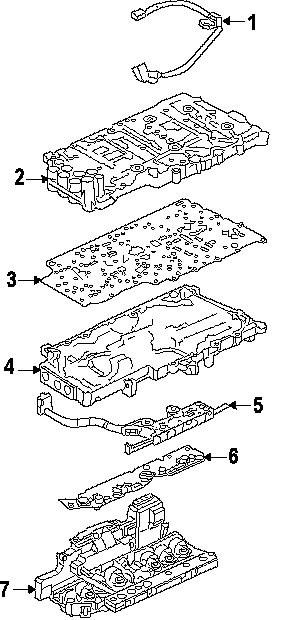
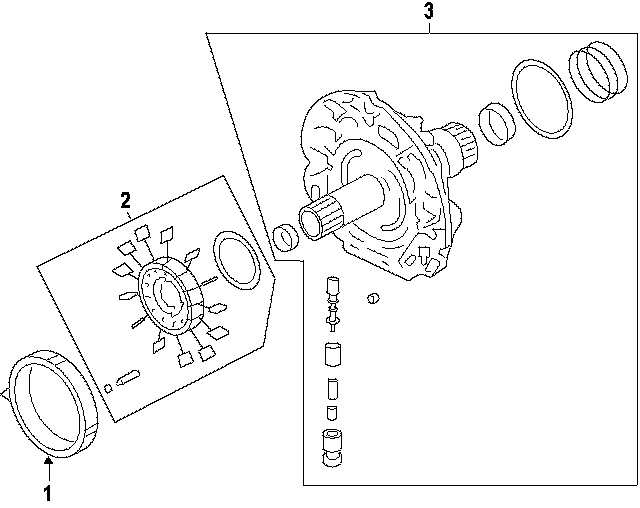
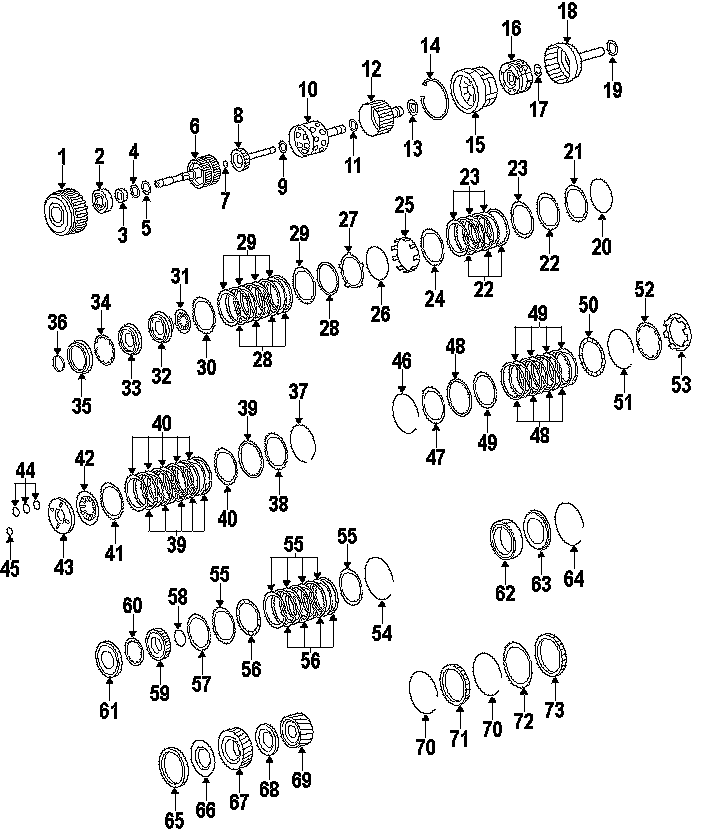
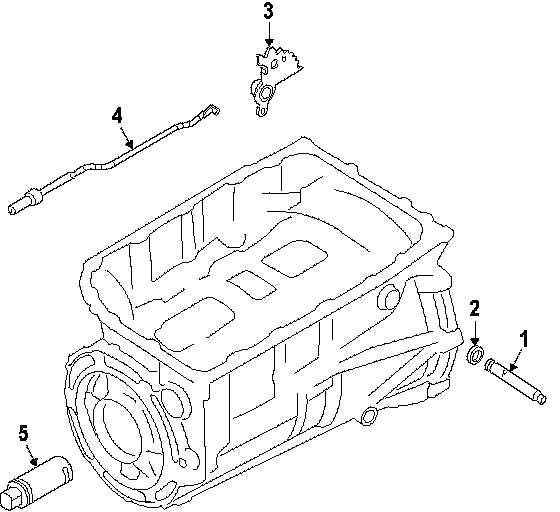

Operation CHARM
: Car repair manuals for everyone.
Home
>>
Cadillac
>>
2007
>>
Escalade ESV AWD V8-6.2L
>>
Parts and Labor
>>
Transmission and Drivetrain
>>
Automatic Transmission/Transaxle
>>
Images
Images
6-Speed, Case & Related Parts:

6-Speed, Valve Body & Related Parts:

6-Speed, Oil Pump & Related Parts:

6-Speed, Clutches & Gear Train:

6-Speed, Parking Pawl & Related Parts:
